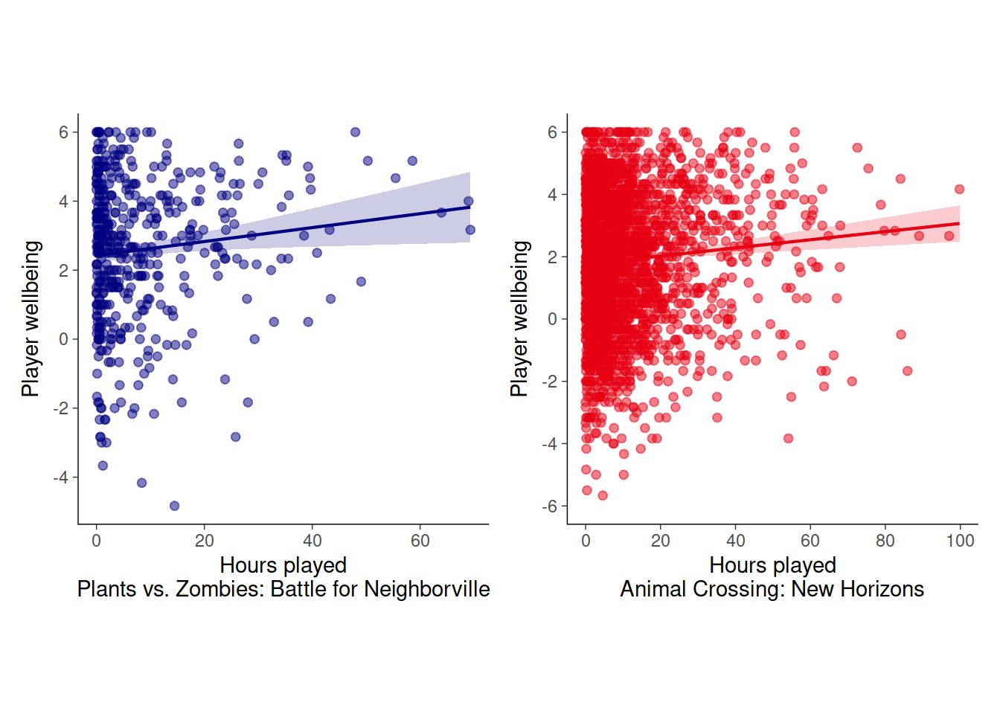
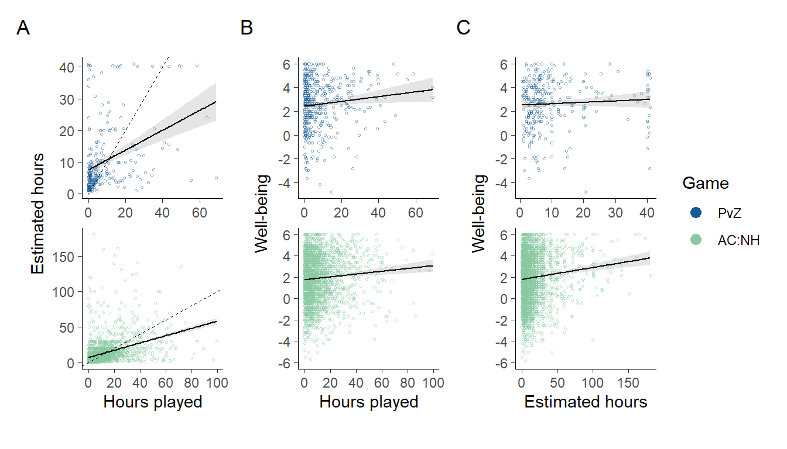
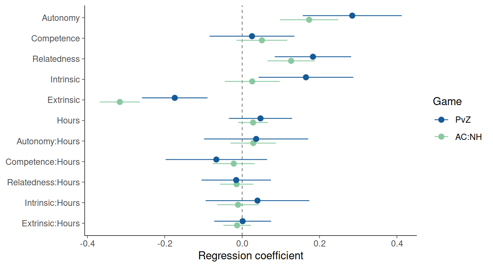
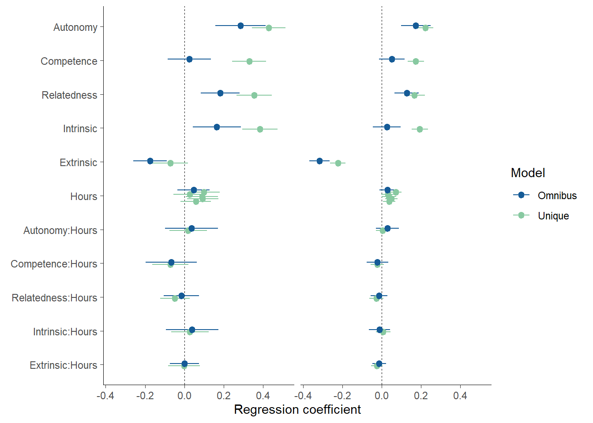
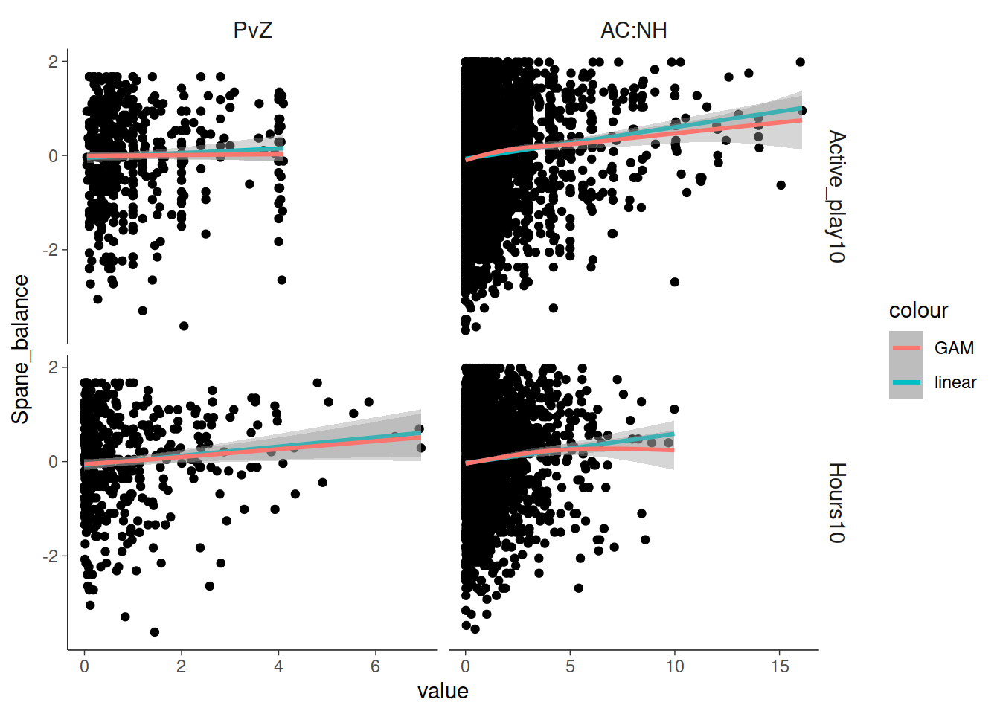

5 Analyses
library(pacman)
p_load(
here,
knitr,
patchwork,
scales,
broom,
ggstance,
tidyverse
)theme_set(
theme_classic(base_line_size = .25, base_rect_size = 0) +
theme(
strip.text = element_text(size = rel(1)),
strip.background = element_blank(),
legend.position = "right"
)
)
colors <- c("#155b97", "#88c9a1")ac <- read_rds(here("data/noa/ac-excluded.rds"))
pvz <- read_rds(here("data/ea/pvz-excluded.rds"))
ac2 <- read_rds(here("data/noa/ac.rds"))
pvz2 <- read_rds(here("data/ea/pvz.rds"))5.1 Create joint dataset
Create harmonized datasets for easier analysis
ac <- ac %>%
select(
player_id,
spane_balance, autonomy,
competence, relatedness, enjoyment,
extrinsic, active_play, Hours
)
pvz <- pvz %>%
select(
player_id, spane_balance, autonomy,
competence, relatedness, enjoyment,
extrinsic, active_play, Hours
)
dat <- bind_rows(pvz, ac, .id = "Game") %>%
mutate(Game = factor(Game, labels = c("PvZ", "AC:NH")))Game time is in units of 10 hours to make the size of the coefficients bigger and thus easier to interpret e.g. when shown with 2 decimal points.
dat$Hours10 <- dat$Hours / 10
dat$active_play10 <- dat$active_play / 105.2 RQ1: Time and well-being
5.2.1 Objective vs subjective game time
p0 <- dat %>%
ggplot(aes(Hours, active_play, col = Game)) +
scale_color_manual(values = colors) +
geom_point(shape = 1, alpha = .5, size = .5) +
scale_y_continuous(breaks = pretty_breaks()) +
scale_x_continuous(breaks = pretty_breaks()) +
geom_smooth(method = "lm", col = "black", size = .5, alpha = .25) +
theme(aspect.ratio = 1) +
guides(
color = guide_legend(
override.aes = list(size = 3, shape = 16, alpha = 1)
)
) +
facet_wrap("Game", scales = "free", nrow = 2)p1 <- p0 + geom_abline(lty = 2, size = .25)Model fitted separately to both datasets
res <- function(model) {
out1 <- tidy(model, conf.int = TRUE) %>%
select(-statistic) %>%
rename(SE = std.error)
out2 <- glance(model) %>%
select(1,2, nobs) %>%
rename(r2 = r.squared, r2a = adj.r.squared)
bind_cols(out1, out2)
}
dat %>%
group_by(Game) %>%
group_modify(~res(lm(active_play ~ Hours, data = .x))) %>%
kable(digits = c(0,2,2,1,3,2,2,2,2,1))| Game | term | estimate | SE | p.value | conf.low | conf.high | r2 | r2a | nobs |
|---|---|---|---|---|---|---|---|---|---|
| PvZ | (Intercept) | 7.56 | 0.7 | 0 | 6.14 | 8.99 | 0.13 | 0.13 | 275 |
| PvZ | Hours | 0.31 | 0.0 | 0 | 0.22 | 0.41 | 0.13 | 0.13 | 275 |
| AC:NH | (Intercept) | 7.36 | 0.4 | 0 | 6.53 | 8.19 | 0.15 | 0.15 | 2304 |
| AC:NH | Hours | 0.51 | 0.0 | 0 | 0.46 | 0.56 | 0.15 | 0.15 | 2304 |
5.2.2 Objective time and SWB
p2 <- p0 + aes(y = spane_balance)Model fitted separately to both datasets
dat %>%
group_by(Game) %>%
group_modify(~res(lm(scale(spane_balance) ~ Hours10, data = .x))) %>%
kable(digits = c(0,2,2,1,3,2,2,2,2,1))| Game | term | estimate | SE | p.value | conf.low | conf.high | r2 | r2a | nobs |
|---|---|---|---|---|---|---|---|---|---|
| PvZ | (Intercept) | -0.07 | 0.1 | 0.200 | -0.19 | 0.04 | 0.01 | 0.01 | 468 |
| PvZ | Hours10 | 0.10 | 0.0 | 0.017 | 0.02 | 0.18 | 0.01 | 0.01 | 468 |
| AC:NH | (Intercept) | -0.03 | 0.0 | 0.239 | -0.08 | 0.02 | 0.01 | 0.01 | 2537 |
| AC:NH | Hours10 | 0.06 | 0.0 | 0.000 | 0.03 | 0.09 | 0.01 | 0.01 | 2537 |
A separate figure of just this
foo <- function(game, n) {
tmp <- dat %>%
mutate(Game2 = factor(Game, labels = c("Plants vs. Zombies: Battle for Neighborville", "Animal Crossing: New Horizons"))) %>%
filter(Game == game)
tmp %>%
ggplot(aes(Hours, spane_balance)) +
geom_point(alpha = .5, size = 1.75, color = colors[n]) +
scale_y_continuous(
"Player wellbeing",
breaks = pretty_breaks()
) +
scale_x_continuous(
str_glue("Hours played\n{unique(tmp$Game2)}"),
breaks = pretty_breaks()
) +
geom_smooth(
method = "lm", size = .75, alpha = .2,
col = colors[n], fill = colors[n]
) +
theme(aspect.ratio = 1, legend.position = "none", strip.text = element_blank()) +
facet_wrap("Game2", scales = "free", nrow = 1)
}
foo("PvZ", 1) | foo("AC:NH", 2)
5.2.3 Subjective time and SWB
p3 <- p0 + aes(x = active_play, y = spane_balance)dat %>%
group_by(Game) %>%
group_modify(~res(lm(scale(spane_balance) ~ active_play10, data = .x))) %>%
kable(digits = c(0,2,2,1,3,2,2,2,2,1))| Game | term | estimate | SE | p.value | conf.low | conf.high | r2 | r2a | nobs |
|---|---|---|---|---|---|---|---|---|---|
| PvZ | (Intercept) | -0.03 | 0.1 | 0.697 | -0.19 | 0.12 | 0.00 | 0.00 | 309 |
| PvZ | active_play10 | 0.06 | 0.1 | 0.285 | -0.05 | 0.16 | 0.00 | 0.00 | 309 |
| AC:NH | (Intercept) | -0.02 | 0.0 | 0.381 | -0.05 | 0.02 | 0.01 | 0.01 | 4171 |
| AC:NH | active_play10 | 0.05 | 0.0 | 0.000 | 0.03 | 0.07 | 0.01 | 0.01 | 4171 |
5.2.4 Figure
(p1 +
labs(x = "Hours played", y = "Estimated hours") +
theme(legend.position = "none") |
p2 +
labs(x = "Hours played", y = "Well-being") +
theme(legend.position = "none") |
p3 +
labs(x = "Estimated hours", y = "Well-being") +
theme(legend.position = "right")
) &
plot_annotation(tag_levels = "A") &
theme(strip.text = element_blank())
5.3 RQ2: Well-being and motivation
# Nice names for plots
dat <- dat %>% rename_all(str_to_title)
dat <- dat %>%
rename(Intrinsic = Enjoyment)
# Standardize everything
# Hours (centered) is divided by 10 to put on same scale with others.
dat <- dat %>%
group_by(Game) %>%
mutate(
across(Spane_balance:Extrinsic, ~as.numeric(scale(., T, T))),
Hours = as.numeric(scale(Hours10, T, F))
)
# Fit all models to both datasets
xs <- dat %>%
group_by(Game) %>%
nest() %>%
mutate(
# Omnibus model where variables work together
x = map(data, ~lm(Spane_balance ~ (Autonomy + Competence + Relatedness + Intrinsic + Extrinsic) * Hours, data = .x)),
# Separate models for variables to work alone
x1 = map(data, ~lm(Spane_balance ~ Autonomy * Hours, data = .x)),
x2 = map(data, ~lm(Spane_balance ~ Competence * Hours, data = .x)),
x3 = map(data, ~lm(Spane_balance ~ Relatedness * Hours, data = .x)),
x4 = map(data, ~lm(Spane_balance ~ Intrinsic * Hours, data = .x)),
x5 = map(data, ~lm(Spane_balance ~ Extrinsic * Hours, data = .x))
)tmp <- xs %>%
pivot_longer(x:x5, names_to = "Model") %>%
mutate(Model = ifelse(Model=="x", 'Omnibus', 'Unique')) %>%
mutate(out = map(value, ~tidy(., conf.int = TRUE))) %>%
unnest(out) %>%
filter(!(term %in% c('(Intercept)'))) %>%
mutate(term = fct_rev(fct_inorder(term))) %>%
mutate(
Type = factor(
str_detect(term, ":"), labels = c("Main effect", "Moderation")
)
)
p1 <- tmp %>%
filter(Model == "Omnibus") %>%
drop_na() %>%
ggplot(aes(estimate, term, col = Game)) +
scale_color_manual(values = colors) +
scale_x_continuous(
'Regression coefficient', breaks = pretty_breaks()
) +
geom_vline(xintercept = 0, lty = 2, size = .2) +
geom_pointrangeh(
aes(xmin = conf.low, xmax = conf.high),
size = .4, position = position_dodge2v(.4)
) +
theme(
axis.title.y = element_blank(),
strip.text = element_blank()
)
p1
map(xs$x, res)
#> [[1]]
#> # A tibble: 12 x 9
#> term estimate SE p.value conf.low conf.high r2 r2a nobs
#> <chr> <dbl> <dbl> <dbl> <dbl> <dbl> <dbl> <dbl> <int>
#> 1 (Intercept) 0.0162 0.0428 7.06e-1 -0.0680 0.100 0.291 0.272 404
#> 2 Autonomy 0.285 0.0650 1.55e-5 0.157 0.412 0.291 0.272 404
#> 3 Competence 0.0255 0.0557 6.48e-1 -0.0840 0.135 0.291 0.272 404
#> 4 Relatedness 0.183 0.0502 3.05e-4 0.0843 0.282 0.291 0.272 404
#> 5 Intrinsic 0.165 0.0622 8.37e-3 0.0426 0.287 0.291 0.272 404
#> 6 Extrinsic -0.174 0.0431 6.27e-5 -0.259 -0.0896 0.291 0.272 404
#> 7 Hours 0.0474 0.0416 2.55e-1 -0.0344 0.129 0.291 0.272 404
#> 8 Autonomy:Hours 0.0361 0.0685 5.98e-1 -0.0985 0.171 0.291 0.272 404
#> 9 Competence:Hou… -0.0667 0.0667 3.18e-1 -0.198 0.0644 0.291 0.272 404
#> 10 Relatedness:Ho… -0.0154 0.0456 7.36e-1 -0.105 0.0743 0.291 0.272 404
#> 11 Intrinsic:Hours 0.0396 0.0681 5.62e-1 -0.0944 0.174 0.291 0.272 404
#> 12 Extrinsic:Hours 0.00121 0.0375 9.74e-1 -0.0724 0.0749 0.291 0.272 404
#>
#> [[2]]
#> # A tibble: 12 x 9
#> term estimate SE p.value conf.low conf.high r2 r2a nobs
#> <chr> <dbl> <dbl> <dbl> <dbl> <dbl> <dbl> <dbl> <int>
#> 1 (Intercept) 0.125 0.0256 1.23e- 6 0.0745 0.175 0.145 0.138 1430
#> 2 Autonomy 0.173 0.0384 7.03e- 6 0.0978 0.248 0.145 0.138 1430
#> 3 Competence 0.0511 0.0334 1.26e- 1 -0.0144 0.117 0.145 0.138 1430
#> 4 Relatedness 0.127 0.0312 5.23e- 5 0.0654 0.188 0.145 0.138 1430
#> 5 Intrinsic 0.0260 0.0362 4.74e- 1 -0.0451 0.0970 0.145 0.138 1430
#> 6 Extrinsic -0.316 0.0264 1.56e-31 -0.368 -0.264 0.145 0.138 1430
#> 7 Hours 0.0283 0.0199 1.55e- 1 -0.0107 0.0672 0.145 0.138 1430
#> 8 Autonomy:Hours 0.0287 0.0300 3.38e- 1 -0.0301 0.0876 0.145 0.138 1430
#> 9 Competence:Hou… -0.0217 0.0275 4.31e- 1 -0.0757 0.0323 0.145 0.138 1430
#> 10 Relatedness:Ho… -0.0142 0.0220 5.18e- 1 -0.0574 0.0289 0.145 0.138 1430
#> 11 Intrinsic:Hours -0.0107 0.0275 6.97e- 1 -0.0647 0.0433 0.145 0.138 1430
#> 12 Extrinsic:Hours -0.0129 0.0182 4.76e- 1 -0.0486 0.0227 0.145 0.138 1430We also compared the omnibus estimates to independent estimates
p1 %+%
drop_na(tmp) +
aes(col = Model) +
facet_wrap("Game")
5.4 Nonlinear models
We also investigated potential nonlinear relations between game time and wellbeing. We did so by fitting a model with and without a smooth term, and using AIC to compare the models.
dat %>%
select(Game, Spane_balance, Hours10, Active_play10) %>%
pivot_longer(contains("10")) %>%
ggplot(aes(value, Spane_balance)) +
geom_point() +
geom_smooth(method = "lm", aes(col = "linear")) +
geom_smooth(method = "gam", aes(col = "GAM")) +
facet_grid(name~Game, scales = "free")
library(mgcv)
dat %>%
select(Game, Spane_balance, Hours10, Active_play10) %>%
pivot_longer(contains("10"), names_to = "Variable") %>%
group_by(Game, Variable) %>%
nest() %>%
mutate(linear = map(data, ~gam(Spane_balance ~ value, data = .x))) %>%
mutate(smooth = map(data, ~gam(Spane_balance ~ s(value), data = .x))) %>%
pivot_longer(linear:smooth, names_to = "Model") %>%
mutate(AIC = map_dbl(value, AIC)) %>%
select(Game, Variable, Model, AIC) %>%
pivot_wider(names_from = Model, values_from = AIC) %>%
mutate(Difference = linear-smooth) %>%
kable(digits = 1)| Game | Variable | linear | smooth | Difference |
|---|---|---|---|---|
| PvZ | Hours10 | 1337.7 | 1337.7 | 0.0 |
| PvZ | Active_play10 | 883.1 | 882.2 | 0.9 |
| AC:NH | Hours10 | 7218.9 | 7218.2 | 0.8 |
| AC:NH | Active_play10 | 11791.8 | 11791.8 | 0.0 |
5.5 System information
sessionInfo()
#> R version 4.0.3 (2020-10-10)
#> Platform: x86_64-pc-linux-gnu (64-bit)
#> Running under: Ubuntu 20.04.1 LTS
#>
#> Matrix products: default
#> BLAS: /usr/lib/x86_64-linux-gnu/openblas-pthread/libblas.so.3
#> LAPACK: /usr/lib/x86_64-linux-gnu/openblas-pthread/liblapack.so.3
#>
#> locale:
#> [1] LC_CTYPE=C.UTF-8 LC_NUMERIC=C LC_TIME=C.UTF-8
#> [4] LC_COLLATE=C.UTF-8 LC_MONETARY=C.UTF-8 LC_MESSAGES=C.UTF-8
#> [7] LC_PAPER=C.UTF-8 LC_NAME=C LC_ADDRESS=C
#> [10] LC_TELEPHONE=C LC_MEASUREMENT=C.UTF-8 LC_IDENTIFICATION=C
#>
#> attached base packages:
#> [1] stats graphics grDevices utils datasets methods base
#>
#> other attached packages:
#> [1] mgcv_1.8-33 nlme_3.1-150 forcats_0.5.0 stringr_1.4.0
#> [5] dplyr_1.0.2 purrr_0.3.4 readr_1.4.0 tidyr_1.1.2
#> [9] tibble_3.0.4 ggplot2_3.3.2 tidyverse_1.3.0 ggstance_0.3.4
#> [13] broom_0.7.2 scales_1.1.1 patchwork_1.1.0 knitr_1.30
#> [17] here_0.1 pacman_0.5.1
#>
#> loaded via a namespace (and not attached):
#> [1] Rcpp_1.0.5 lubridate_1.7.9 lattice_0.20-41 assertthat_0.2.1
#> [5] rprojroot_1.3-2 digest_0.6.27 utf8_1.1.4 R6_2.5.0
#> [9] cellranger_1.1.0 backports_1.2.0 reprex_0.3.0 evaluate_0.14
#> [13] httr_1.4.2 highr_0.8 pillar_1.4.6 rlang_0.4.8
#> [17] readxl_1.3.1 rstudioapi_0.11 Matrix_1.2-18 rmarkdown_2.5.2
#> [21] labeling_0.4.2 splines_4.0.3 munsell_0.5.0 compiler_4.0.3
#> [25] modelr_0.1.8 xfun_0.19 pkgconfig_2.0.3 htmltools_0.5.0
#> [29] tidyselect_1.1.0 bookdown_0.21 fansi_0.4.1 crayon_1.3.4
#> [33] dbplyr_2.0.0 withr_2.3.0 grid_4.0.3 jsonlite_1.7.1
#> [37] gtable_0.3.0 lifecycle_0.2.0 DBI_1.1.0 magrittr_1.5
#> [41] cli_2.1.0 stringi_1.5.3 farver_2.0.3 fs_1.5.0
#> [45] xml2_1.3.2 ellipsis_0.3.1 generics_0.1.0 vctrs_0.3.4
#> [49] tools_4.0.3 glue_1.4.2 hms_0.5.3 parallel_4.0.3
#> [53] yaml_2.2.1 colorspace_1.4-1 rvest_0.3.6 haven_2.3.1